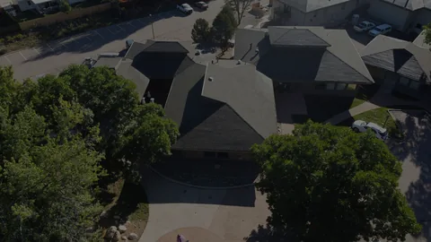
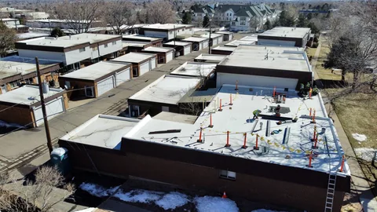

Photo credits
Where the photos and logos on this site came from, who made them, and the licenses they're used under. Crestone job photos from Colorado are used with permission of the Colorado company.

A1 (a1-1049.webp, a1-800.webp, a1-480.webp)
"Asphalt shingles damage.jpg" by Samuel Bolton, CC BY-SA 4.0, via Wikimedia Commons (https://commons.wikimedia.org/wiki/File:Asphalt_shingles_damage.jpg)
Author: Samuel Bolton. License: CC BY-SA 4.0. Source.
Used on: areas/maryville/, blog post 23, blog post 10, blog post 6, blog post 30, blog post 2, blog post 36, blog post 3, blog post 27, blog post 5, blog post 8, blog post 14, blog post 20, blog post 15, roofing/chimney-repair/, roofing/emergency-damage-repair/, roofing/skylight-repair/

A2 (a2-1600.webp, a2-800.webp, a2-480.webp)
"Knoxville-from-sharps-ridge-tn2.jpg" by Brian Stansberry, CC BY 3.0, via Wikimedia Commons (https://commons.wikimedia.org/wiki/File:Knoxville-from-sharps-ridge-tn2.jpg)
Author: Brian Stansberry. License: CC BY 3.0. Source.
Used on: areas/knoxville/, blog post 17

A3 (a3-1600.webp, a3-800.webp, a3-480.webp)
"Downtown - Knoxville, Tennessee - April 19, 2014.jpg" by David Ratledge, CC BY 4.0, via Wikimedia Commons (https://commons.wikimedia.org/wiki/File:Downtown_-_Knoxville,_Tennessee_-_April_19,_2014.jpg)
Author: David Ratledge. License: CC BY 4.0. Source.
Used on: areas/knoxville/, blog post 7, blog post 34, blog post 19, blog post 28, faq/, other-services/windows-doors/

A4 (a4-1600.webp, a4-800.webp, a4-480.webp)
"Foothills Parkway, October 2018--Andrea Walton (43968388000).jpg" by Great Smoky Mountains National Park from Gatlinburg, TN, Public domain, via Wikimedia Commons (https://commons.wikimedia.org/wiki/File:Foothills_Parkway,_October_2018--Andrea_Walton_(43968388000).jpg)
Author: Great Smoky Mountains National Park from Gatlinburg, TN. License: Public domain. Source.
Used on: areas/seymour/, contact/

A5 (a5-1600.webp, a5-800.webp, a5-480.webp)
"Foothills Parkway Overlook.jpg" by William McKeehan, CC BY-SA 2.0, via Wikimedia Commons (https://commons.wikimedia.org/wiki/File:Foothills_Parkway_Overlook.jpg)
Author: William McKeehan. License: CC BY-SA 2.0. Source.
Used on: areas/seymour/

A6 (a6-1600.webp, a6-800.webp, a6-480.webp)
"Maryville-from-Blount-County-tn1.jpg" by Brian Stansberry, CC BY 3.0, via Wikimedia Commons (https://commons.wikimedia.org/wiki/File:Maryville-from-Blount-County-tn1.jpg)
Author: Brian Stansberry. License: CC BY 3.0. Source.
Used on: areas/maryville/

A7 (a7-1600.webp, a7-800.webp, a7-480.webp)
"Fort Loudoun Lock & Dam - Lenoir City, Tennessee - August 3, 2014.jpg" by Lee Ann Ratledge, CC BY 4.0, via Wikimedia Commons (https://commons.wikimedia.org/wiki/File:Fort_Loudoun_Lock_%26_Dam_-_Lenoir_City,_Tennessee_-_August_3,_2014.jpg)
Author: Lee Ann Ratledge. License: CC BY 4.0. Source.
Used on: areas/lenoir-city/

A8 (a8-1600.webp, a8-800.webp, a8-480.webp)
"Farragut-Town-Hall-tn1.jpg" by Brian Stansberry, CC BY 3.0, via Wikimedia Commons (https://commons.wikimedia.org/wiki/File:Farragut-Town-Hall-tn1.jpg)
Author: Brian Stansberry. License: CC BY 3.0. Source.
Used on: areas/farragut/, blog post 34, blog post 9, blog post 32, blog post 25, blog post 28

A9 (a9-1440.webp, a9-800.webp, a9-480.webp)
"FEMA - 38076 - A Blue Tarp installed on a home in Terrebone Parrish, LA.jpg" by Barry Bahler, Public domain, via Wikimedia Commons (https://commons.wikimedia.org/wiki/File:FEMA_-_38076_-_A_Blue_Tarp_installed_on_a_home_in_Terrebone_Parrish,_LA.jpg)
Author: Barry Bahler. License: Public domain. Source.
Used on: home page, blog/, blog post 23, blog post 10, blog post 6, blog post 2, blog post 3, blog post 5, blog post 14, blog post 15, roofing/, roofing/emergency-damage-repair/

A10 (a10-1166.webp, a10-800.webp, a10-480.webp)
"Jonas Clore House, Sycamore Street and 7th Street, Belleview, KY.jpg" by w_lemay, CC BY-SA 2.0, via Wikimedia Commons (https://commons.wikimedia.org/wiki/File:Jonas_Clore_House,_Sycamore_Street_and_7th_Street,_Belleview,_KY.jpg)
Author: w_lemay. License: CC BY-SA 2.0. Source.
Used on: areas/karns/, blog/, blog post 34, blog post 26, blog post 33, blog post 16, blog post 11, blog post 17, blog post 15, roofing/, roofing/metal-roofing/

A11 (a11-1600.webp, a11-800.webp, a11-480.webp)
"Plainview-House-Mountain-tn1.jpg" by Brian Stansberry, CC BY 4.0, via Wikimedia Commons (https://commons.wikimedia.org/wiki/File:Plainview-House-Mountain-tn1.jpg)
Author: Brian Stansberry. License: CC BY 4.0. Source.
Used on: areas/karns/, blog post 1, blog post 13, financing/

A12 (a12-1600.webp, a12-800.webp, a12-480.webp)
"House-mountain-west-tn2.jpg" by Brian Stansberry, CC BY 3.0, via Wikimedia Commons (https://commons.wikimedia.org/wiki/File:House-mountain-west-tn2.jpg)
Author: Brian Stansberry. License: CC BY 3.0. Source.
Used on: areas/, areas/powell/, blog post 24, blog post 12, blog post 5, blog post 1, blog post 13, other-services/gutters/

A13 (a13-1600.webp, a13-800.webp, a13-480.webp)
"Meadow in the Smoky Mountains (41665h).jpg" by Rhododendrites, CC BY-SA 4.0, via Wikimedia Commons (https://commons.wikimedia.org/wiki/File:Meadow_in_the_Smoky_Mountains_(41665h).jpg)
Author: Rhododendrites. License: CC BY-SA 4.0. Source.
Used on: areas/sevierville/, blog/, blog post 8

A14 (a14-1600.webp, a14-800.webp, a14-480.webp)
"Great Smoky Mountains National Park in Autumn.jpg" by (WT-en) Benjiho at English Wikivoyage, Public domain, via Wikimedia Commons (https://commons.wikimedia.org/wiki/File:Great_Smoky_Mountains_National_Park_in_Autumn.jpg)
Author: (WT-en) Benjiho at English Wikivoyage. License: Public domain. Source.
Used on: areas/sevierville/, roofing/metal-roofing/
A15 (a15-1600.webp, a15-800.webp, a15-480.webp)
AI-generated illustration (OpenAI gpt-image-1, 2026-10-21). Not a photo of a Crestone job.
Author: AI-generated (OpenAI gpt-image-1). License: Generated for VG; no third-party license. Source.
Used on: blog post 33, blog post 16, roofing/metal-roofing/

C02 (c02-1600.webp, c02-800.webp, c02-480.webp)
Crestone Roofing job photo, taken in Colorado, used with permission.
Author: Crestone Roofing. License: Used with permission. Source.
Used on: home page, areas/oak-ridge/, blog/, blog post 10, blog post 9, blog post 36, blog post 32, blog post 3, blog post 25, blog post 27, blog post 20, projects/, roofing/, roofing/roof-replacement/

C03 (c03-1600.webp, c03-800.webp, c03-480.webp)
Crestone Roofing job photo, taken in Colorado, used with permission.
Author: Crestone Roofing. License: Used with permission. Source.
Used on: areas/lenoir-city/, projects/, roofing/, roofing/roof-replacement/

C04 (c04-1500.webp, c04-800.webp, c04-480.webp)
Crestone Roofing job photo, taken in Colorado, used with permission.
Author: Crestone Roofing. License: Used with permission. Source.
Used on: areas/knoxville/, blog post 35, blog post 12, blog post 4, free-roof-inspection/, projects/, roofing/, roofing/church-roofing/

C05 (c05-1600.webp, c05-800.webp, c05-480.webp)
Crestone Roofing job photo, taken in Colorado, used with permission.
Author: Crestone Roofing. License: Used with permission. Source.
Used on: areas/hardin-valley/, blog post 35, blog post 4, blog post 31
C07 (c07-1600.webp, c07-800.webp, c07-480.webp)
Crestone Roofing job photo, taken in Colorado, used with permission.
Author: Crestone Roofing. License: Used with permission. Source.
Used on: blog post 26, projects/

C08 (c08-1600.webp, c08-800.webp, c08-480.webp)
Crestone Roofing job photo, taken in Colorado, used with permission.
Author: Crestone Roofing. License: Used with permission. Source.
Used on: about/, areas/hardin-valley/, blog post 18, blog post 11, other-services/, other-services/siding/, projects/

C09 (c09-1600.webp, c09-800.webp, c09-480.webp)
Crestone Roofing job photo, taken in Colorado, used with permission.
Author: Crestone Roofing. License: Used with permission. Source.
Used on: projects/, roofing/church-roofing/


C12 (c12-1500.webp, c12-800.webp, c12-480.webp)
Crestone Roofing job photo, taken in Colorado, used with permission.
Author: Crestone Roofing. License: Used with permission. Source.
Used on: home page, areas/farragut/, areas/karns/, areas/lenoir-city/, areas/powell/, blog/, blog post 10, blog post 7, blog post 34, blog post 24, blog post 35, blog post 12, blog post 6, blog post 4, blog post 26, blog post 31, blog post 9, blog post 16, blog post 18, blog post 30, blog post 19, blog post 36, blog post 32, blog post 3, blog post 25, blog post 21, blog post 11, blog post 27, blog post 29, blog post 17, blog post 8, blog post 20, blog post 1, blog post 15, blog post 28, blog post 13, free-roof-inspection/, other-services/, other-services/gutters/, other-services/windows-doors/, projects/, roofing/metal-roofing/, roofing/roof-replacement/, roofing/skylight-repair/


C16 (c16-1600.webp, c16-800.webp, c16-480.webp)
Crestone Roofing job photo, taken in Colorado, used with permission.
Author: Crestone Roofing. License: Used with permission. Source.
Used on: blog/, blog post 23, blog post 18, blog post 19, blog post 32, blog post 11, blog post 29, blog post 17, blog post 22, blog post 28, other-services/siding/, projects/
C19 (c19-1500.webp, c19-800.webp, c19-480.webp)
Crestone Roofing job photo, taken in Colorado, used with permission.
Author: Crestone Roofing. License: Used with permission. Source.
Used on: projects/, roofing/church-roofing/

C22 (c22-1218.webp, c22-800.webp, c22-480.webp)
Crestone Roofing job photo, taken in Colorado, used with permission.
Author: Crestone Roofing. License: Used with permission. Source.
Used on: blog post 35, blog post 26, projects/, roofing/, roofing/commercial-roofing/

C23 (c23-1600.webp, c23-800.webp, c23-480.webp)
Crestone Roofing job photo, taken in Colorado, used with permission.
Author: Crestone Roofing. License: Used with permission. Source.
Used on: blog post 18, blog post 11, blog post 29, blog post 22, other-services/, other-services/siding/, projects/

C24 (c24-1500.webp, c24-800.webp, c24-480.webp)
Crestone Roofing job photo, taken in Colorado, used with permission.
Author: Crestone Roofing. License: Used with permission. Source.
Used on: blog post 33, projects/, roofing/commercial-roofing/

C25 (c25-1600.webp, c25-800.webp, c25-480.webp)
Crestone Roofing job photo, taken in Colorado, used with permission.
Author: Crestone Roofing. License: Used with permission. Source.
Used on: blog post 29, blog post 22, other-services/windows-doors/, projects/

C26 (c26-1053.webp, c26-800.webp, c26-480.webp)
Crestone Roofing job photo, taken in Colorado, used with permission.
Author: Crestone Roofing. License: Used with permission. Source.
Used on: home page, areas/farragut/, areas/powell/, areas/sevierville/, blog/, blog post 10, blog post 7, blog post 6, blog post 26, blog post 9, blog post 33, blog post 16, blog post 30, blog post 19, blog post 2, blog post 36, blog post 3, blog post 25, blog post 21, blog post 27, blog post 17, blog post 8, blog post 14, blog post 22, blog post 20, blog post 15, blog post 28, blog post 13, free-roof-inspection/, products/, projects/, roofing/, roofing/chimney-repair/, roofing/emergency-damage-repair/, roofing/roof-replacement/, roofing/skylight-repair/


C31 (c31-900.webp, c31-800.webp, c31-480.webp)
Crestone Roofing job photo, taken in Colorado, used with permission.
Author: Crestone Roofing. License: Used with permission. Source.
Used on: areas/oak-ridge/

C32 (c32-900.webp, c32-800.webp, c32-480.webp)
Crestone Roofing job photo, taken in Colorado, used with permission.
Author: Crestone Roofing. License: Used with permission. Source.
Used on: areas/oak-ridge/, blog/, blog post 23, blog post 24, blog post 12, blog post 4, blog post 31, blog post 30, blog post 2, blog post 32, blog post 25, blog post 5, blog post 1, blog post 15, blog post 13, other-services/, other-services/gutters/, projects/, roofing/, roofing/chimney-repair/

C34 (c34-1600.webp, c34-800.webp, c34-480.webp)
Crestone Roofing job photo, taken in Colorado, used with permission.
Author: Crestone Roofing. License: Used with permission. Source.
Used on: roofing/church-roofing/
C35 (c35-1600.webp, c35-800.webp, c35-480.webp)
Crestone Roofing job photo, taken in Colorado, used with permission.
Author: Crestone Roofing. License: Used with permission. Source.
Used on: projects/, roofing/commercial-roofing/
C37 (c37-1600.webp, c37-800.webp, c37-480.webp)
Crestone Roofing job photo, taken in Colorado, used with permission.
Author: Crestone Roofing. License: Used with permission. Source.
Used on: projects/, roofing/commercial-roofing/

C39 (c39-1166.webp, c39-800.webp, c39-480.webp)
Crestone Roofing job photo, taken in Colorado, used with permission.
Author: Crestone Roofing. License: Used with permission. Source.
Used on: home page, areas/hardin-valley/, areas/maryville/, areas/seymour/, blog/, blog post 23, blog post 7, blog post 24, blog post 35, blog post 6, blog post 19, blog post 2, blog post 21, blog post 27, blog post 5, blog post 14, blog post 20, free-roof-inspection/, roofing/emergency-damage-repair/
Brand logos
Logos on the products page come from each maker's own website. Brand names and logos belong to their owners.
GAF (gaf.svg)
Source: https://www.gaf.com/en-us, checked 2026-10-26.
Owens Corning (owens-corning.svg)
Source: https://imagecdn.owenscorning.com/image/upload/v1575575892/meganav/oc-logo.svg, checked 2026-10-26.
Atlas (atlas.png)
Source: https://www.atlasroofing.com/img/atlas-logo.png, checked 2026-10-26.
IKO (iko.svg)
Source: https://www.iko.com/na/wp-content/uploads/2026/02/IKO-Logo.svg, checked 2026-10-26.
Malarkey (malarkey.svg)
Source: https://www.malarkeyroofing.com/app/themes/malarkey-roofing/src/images/logo-horizontal-full-color.svg, checked 2026-10-26.
Carlisle SynTec (carlisle.svg)
Source: https://www.carlislesyntec.com/-/media/Project/SynTec/Images/Featured-Image/Carlisle-SynTec-Logo2.ashx, checked 2026-10-26.
Elevate (holcimelevate.webp)
Source: https://www.holcimelevate.com/content/dam/elevateamericas/assets_rebrand/Elevate-Logo.png, checked 2026-10-26.
VELUX (velux.svg)
Source: https://www.velux.com/dist/velux-marketing/client/logo-sprite-93c691381cf5fc09.BZuVugaA.svg, checked 2026-10-26.
James Hardie (james-hardie.svg)
Source: https://images.ctfassets.net/dzi2asncd44t/1zXM9ZVxSHpXuLLWzOIf5s/8c5abf86f25fc326af14728a31407f5d/james-hardie-vector-logo.svg, checked 2026-10-26.
LP SmartSide (lp-smartside.svg)
Source: https://lpcorp.com/, checked 2026-10-26.
ProVia (provia.webp)
Source: https://www.provia.com/wp-content/uploads/2024/06/ProVia-logo.png, checked 2026-10-26.
Englert (englert.svg)
Source: https://www.englertinc.com/themes/custom/englertdptheme/images/englert-logo-black.svg, checked 2026-10-26.
The Crestone Roofing mark is used by the Knoxville company.